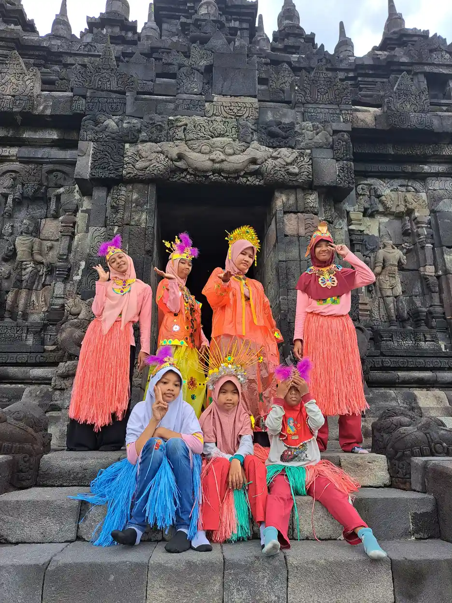
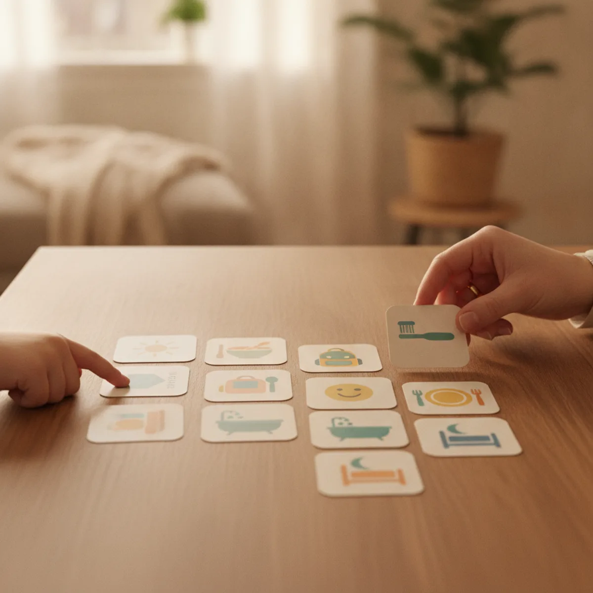
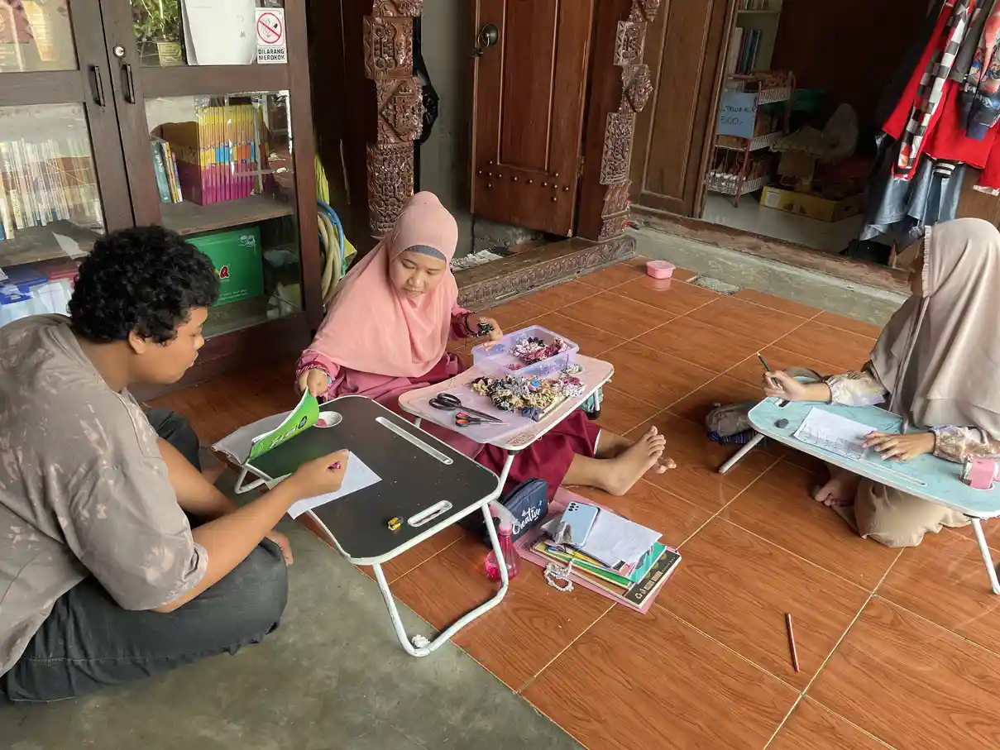
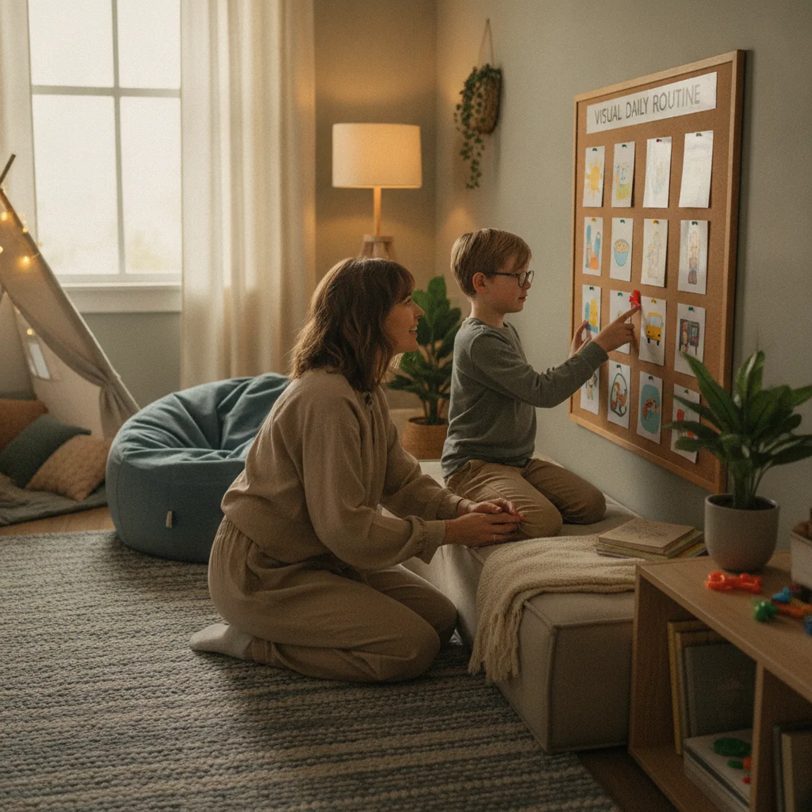

Masalah tidur dapat membuat pagi, sekolah, terapi, dan hubungan keluarga menjadi lebih berat. Anak mungkin sulit mulai tidur, terbangun berkali-kali, bangun terlalu dini, atau sangat mengantuk pada siang hari. Pada anak autis, kebutuhan terhadap rutinitas dan perbedaan pemrosesan sensorik dapat membuat perubahan kecil terasa besar. Namun, tidak ada satu jadwal yang cocok untuk semua anak. Tujuannya bukan memaksa anak mengikuti jam ideal orang dewasa, melainkan membangun pola yang cukup sehat, aman, dan dapat dijalankan keluarga.
NICE merekomendasikan penilaian terhadap pola tidur siang dan malam, keteraturan waktu tidur, lingkungan, aktivitas, kondisi fisik, obat, hubungan emosional, dan dampak masalah tidur pada keluarga. NHS juga menyarankan rutinitas yang familiar, pemberitahuan perubahan, dan lingkungan yang nyaman. Prinsip ini sejalan dengan dukungan inklusif dan perencanaan individual: kebutuhan anak menjadi titik awal, bukan sekadar kepatuhan pada jadwal.
Mulai dari Pola Tidur, Bukan Tebakan
Selama sekitar dua minggu, catat waktu anak mulai bersiap, masuk tempat tidur, tertidur, terbangun, bangun pagi, tidur siang, dan aktivitas penting pada siang hari. Tambahkan catatan tentang layar, makanan atau minuman yang mengandung kafein, sakit, sembelit, gatal, suara, cahaya, dan perubahan sekolah. Catatan ini bukan ujian bagi orang tua. Data sederhana membantu keluarga melihat apakah masalah terjadi setiap malam atau hanya setelah hari tertentu.
Bedakan antara jam masuk kamar dan jam benar-benar tertidur. Jika anak berada di tempat tidur pukul delapan tetapi baru tertidur pukul sepuluh, memajukan waktu masuk kamar belum tentu membantu. Perhatikan kapan tanda mengantuk muncul secara alami, lalu bangun urutan persiapan di sekitar waktu tersebut. Setelah pola lebih stabil, jadwal dapat digeser perlahan bila keluarga perlu menyesuaikannya dengan sekolah.
Periksa kemungkinan penyebab yang dapat ditangani. Nyeri gigi, refluks, eczema, alergi, konstipasi, kejang, efek obat, atau gangguan napas dapat mengganggu tidur. Jangan menganggap semua masalah tidur sebagai perilaku. Jika anak mendengkur keras, tersedak, atau tampak berhenti bernapas, NICE menyarankan rujukan kepada spesialis untuk menilai sleep apnoea. Bila anak mengantuk berat setiap hari, sampaikan juga kepada tenaga kesehatan.

Buat Urutan Malam yang Dapat Diprediksi
Pilih tiga sampai enam langkah yang dapat dilakukan dalam urutan sama. Contohnya merapikan barang, ke kamar mandi, memakai pakaian tidur, menyikat gigi, membaca atau mendengarkan suara tenang, lalu masuk tempat tidur. Tidak semua langkah harus dilakukan lama. Yang penting adalah tanda awal, urutan, dan penutupnya konsisten. Untuk anak yang menggunakan komunikasi visual, kartu atau foto dapat ditempel pada ketinggian yang mudah dijangkau.
Biarkan anak berpartisipasi. Anak dapat memilih antara dua piyama, dua buku, atau dua lagu yang sama-sama diterima. Ia dapat membalik kartu setelah langkah selesai atau menekan tombol pada alat komunikasi. Pilihan kecil memberi rasa kendali tanpa mengubah batas utama. Hindari menambahkan banyak pertanyaan ketika anak sudah mengantuk, karena percakapan panjang dapat membuat transisi lebih sulit.
Gunakan kalimat penutup yang sama setiap malam, misalnya “urutan malam selesai, sekarang waktunya tidur”. Kalimat ini bukan ancaman dan tidak harus diucapkan dengan nada keras. Jika anak membutuhkan objek penghibur, pastikan objek tersebut aman dan tidak menimbulkan risiko. Bila ada langkah yang menimbulkan penolakan, cari penyebab sensorik atau kesehatan sebelum menambah hadiah dan hukuman.
Gambar jadwal visual di rumah dapat menjadi alat bantu, tetapi jangan menganggap semua kartu cocok. Pilih gambar yang jelas, letakkan berurutan, dan perbarui jika anak sudah memahami langkah. contoh jadwal visual anak autis dapat memberi ide tentang cara membuat urutan terlihat, sedangkan adaptasi aktivitas mengingatkan bahwa posisi dan alat juga dapat memengaruhi kenyamanan.

Atur Lingkungan Tidur dan Kebutuhan Sensorik
Periksa cahaya, suara, suhu, bau, tekstur seprai, posisi bantal, dan pakaian tidur. Sebagian anak lebih tenang dengan ruang gelap, sementara yang lain membutuhkan lampu kecil. Ada anak yang terganggu oleh suara kulkas, kain tertentu, atau aroma sabun. Lakukan satu perubahan pada satu waktu agar keluarga dapat mengetahui apa yang berdampak. Jangan memakai alat penekan, selimut berbobot, atau perangkat tertentu tanpa memastikan keamanan dan saran profesional.
Letakkan layar di luar kamar bila memungkinkan dan buat kesepakatan kapan penggunaannya berhenti. Untuk beberapa keluarga, penghentian mendadak memicu konflik. Gunakan peringatan visual atau timer, lalu ganti layar dengan kegiatan yang tidak terlalu merangsang. Buku, audio tenang, menggambar sederhana, atau merapikan koleksi dapat menjadi pilihan, selama aktivitas tersebut tidak membuat anak semakin aktif.
Atur aktivitas siang agar anak memiliki kesempatan bergerak dan terkena cahaya alami, tetapi hindari mengubah semua hal sekaligus. Tidur siang yang terlalu dekat dengan malam mungkin perlu dibahas, tetapi kebutuhan berbeda menurut usia dan kondisi. Jangan mengurangi tidur siang secara ekstrem agar anak “pasti lelah”. Perubahan drastis dapat memperburuk regulasi emosi dan membuat rutinitas lebih sulit.
Bicarakan aturan kamar dengan bahasa positif. “Lampu redup dan suara pelan” lebih mudah dipahami daripada “jangan berisik”. Jika anak perlu keluar kamar untuk meminta bantuan, sediakan cara komunikasi yang aman. Keluarga dapat mengajarkan satu tanda untuk kebutuhan penting, lalu mengembalikan suasana menjadi tenang tanpa percakapan panjang.

Geser Waktu Tidur Secara Bertahap
Jika anak baru mengantuk jauh setelah waktu tidur yang diharapkan, mulai dari jam yang lebih dekat dengan pola alami. Setelah anak lebih cepat tertidur dan bangun cukup stabil, geser waktu persiapan sedikit demi sedikit. Ukuran perubahan perlu disesuaikan dengan respons anak. Sebagian keluarga lebih berhasil mengubah waktu lima belas menit daripada memajukan satu jam sekaligus.
Bangun pagi juga berperan dalam mengatur ritme. Usahakan waktu bangun tidak berubah terlalu jauh tanpa alasan, termasuk pada akhir pekan. Tetap beri ruang untuk tidur tambahan ketika anak sakit atau sangat lelah. Catat perubahan, bukan hanya keberhasilan. Jika satu langkah membuat anak lebih gelisah selama beberapa malam, kembali ke tahap sebelumnya dan cari penyebabnya.
| Bagian yang diatur | Contoh langkah sederhana | Yang dipantau |
|---|---|---|
| Waktu | Mulai persiapan pada waktu yang relatif sama | Waktu mulai mengantuk dan lama sampai tertidur |
| Urutan | Gunakan tiga sampai enam kartu aktivitas | Langkah yang lancar dan langkah yang memicu penolakan |
| Lingkungan | Kurangi cahaya, suara, atau tekstur yang mengganggu | Respons sensorik dan kemampuan kembali tenang |
| Evaluasi | Catat pola selama dua minggu sebelum menilai hasil | Bangun malam, bangun pagi, tidur siang, dan fungsi siang hari |
Buat versi singkat untuk malam ketika keluarga sedang bepergian atau anak sakit. Misalnya, kamar mandi, pakaian tidur, satu cerita pendek, lalu tempat tidur. Simpan kartu versi singkat di tas atau ponsel. Saat kembali ke rumah, jelaskan bahwa urutan utama akan digunakan lagi. Prediktabilitas dapat dipertahankan meski panjang rutinitas berubah.

Jika Rutinitas Belum Berhasil
Jangan langsung menambah aturan. Tinjau catatan dan tanyakan bagian mana yang paling berat. Anak mungkin belum mengantuk, merasa sakit, takut gelap, terganggu suara, atau tidak memahami kapan urutan berakhir. Ubah satu bagian, pertahankan beberapa malam, dan amati. Jika orang tua sangat lelah, minta dukungan keluarga atau layanan setempat. Kebutuhan pengasuh juga bagian dari rencana tidur yang aman.
Jika anak keluar kamar berulang kali, gunakan respons yang singkat, tenang, dan konsisten setelah memastikan kebutuhan dasar terpenuhi. Hindari percakapan panjang atau hukuman yang membuat kamar menjadi tempat menakutkan. Rencana harus disesuaikan dengan usia, komunikasi, kemampuan keselamatan, dan kondisi keluarga. Konsultasikan dengan profesional bila strategi sederhana tidak membantu atau menambah stres.
NICE menyarankan sleep plan yang disusun bersama orang tua atau pengasuh, dicatat, ditinjau, dan dimodifikasi bila perlu. Obat bukan langkah pertama untuk semua masalah tidur. Jika intervensi farmakologis dipertimbangkan, NICE menyebut perlunya konsultasi dengan dokter spesialis anak atau psikiater yang berpengalaman dalam autisme atau kedokteran tidur, serta pemantauan berkala. Jangan membeli melatonin atau obat lain berdasarkan rekomendasi media sosial.
Perhatikan tanda yang perlu rujukan: dengkuran keras, tersedak, jeda napas, berjalan saat tidur yang berisiko, kejang, nyeri, kantuk berat di siang hari, atau penurunan fungsi mendadak. Tulis apa yang terlihat dan kapan terjadi. Keterangan yang konkret membantu tenaga kesehatan memilih pemeriksaan yang tepat dan mencegah semua kesulitan diberi label perilaku.
Rutinitas yang Fleksibel tetapi Tetap Aman
Cara mengatur waktu tidur anak autis bukan tentang menemukan satu jadwal sempurna. Keluarga perlu menggabungkan pengamatan, urutan yang jelas, penyesuaian sensorik, aktivitas siang, dan evaluasi yang sabar. Anak boleh memiliki preferensi dan cara menenangkan diri yang berbeda. Tugas orang dewasa adalah memastikan pilihan itu aman, dapat dipahami, dan tidak menghalangi bantuan kesehatan ketika diperlukan.
Mulai dari satu perubahan yang dapat dipertahankan. Foto jadwal, kalimat penutup, lampu yang sesuai, atau waktu bangun yang lebih konsisten dapat menjadi langkah pertama. Jika belum berhasil, itu informasi, bukan kegagalan anak atau orang tua. Bawa catatan tidur ketika meminta bantuan agar percakapan dimulai dari pola nyata, bukan dugaan. Kebutuhan setiap keluarga berbeda, jadi keberhasilan dapat berarti malam lebih aman, bukan selalu tidur lebih cepat. Hubungkan penyesuaian rumah dengan prinsip pendidikan inklusi dan intervensi dini agar sekolah dan keluarga dapat memakai bahasa dukungan yang selaras. Baca juga panduan tentang gangguan tidur pada anak dan cara membangun rutinitas pagi agar dukungan tidur terhubung dengan kegiatan sepanjang hari.
Dengan dukungan yang konsisten dan penuh hormat, waktu tidur dapat menjadi momen transisi yang lebih mudah dipahami. Keamanan, kenyamanan, dan kesehatan anak tetap menjadi prioritas. Bila masalah menetap atau berdampak besar, minta bantuan profesional dan bawa catatan tidur yang sudah dibuat.
Pertanyaan yang Sering Diajukan
Berapa lama waktu yang dibutuhkan untuk membentuk rutinitas tidur?
Tidak ada angka yang sama untuk semua anak. Sebagian keluarga melihat perubahan dalam beberapa hari, sementara yang lain membutuhkan beberapa minggu. Mulailah dengan satu atau dua langkah yang realistis, catat respons anak, lalu ubah secara bertahap.
Apakah anak autis harus tidur pada jam yang sama setiap hari?
Jadwal yang konsisten sering membantu anak mengetahui apa yang akan terjadi, tetapi kebutuhan dan kondisi keluarga tetap perlu dipertimbangkan. Jika ada perubahan, beri pemberitahuan dan gunakan penanda visual. Konsistensi tidak berarti mengabaikan sakit, perjalanan, atau kebutuhan sensorik.
Bagaimana jika anak menolak mandi atau menyikat gigi sebelum tidur?
Cari bagian yang membuat tidak nyaman, misalnya suara air, suhu, tekstur pasta gigi, cahaya, atau tuntutan bahasa. Tawarkan pilihan terbatas, gunakan urutan visual, dan latih di waktu yang tidak terburu-buru. Bila nyeri atau masalah kesehatan dicurigai, konsultasikan.
Bolehkah menggunakan melatonin untuk anak autis?
Jangan memulai suplemen atau obat tanpa konsultasi. NICE merekomendasikan penilaian dan sleep plan terlebih dahulu, serta penggunaan obat hanya dalam kondisi tertentu dan dengan pengawasan dokter spesialis yang sesuai.
Apa tanda anak perlu diperiksa karena masalah tidur?
Cari bantuan jika masalah menetap dan memengaruhi fungsi anak atau keluarga, atau jika anak mendengkur keras, tersedak, tampak berhenti bernapas, sangat mengantuk di siang hari, kesakitan, atau mengalami perubahan mendadak.
Haruskah semua langkah bedtime routine dilakukan sempurna?
Tidak. Tujuannya adalah urutan yang dapat dipahami dan cukup menenangkan, bukan kesempurnaan. Pilih langkah yang paling membantu, buat versi singkat untuk malam sulit, dan kembali ke urutan utama ketika kondisi memungkinkan.
Bagaimana melibatkan anak dalam membuat rutinitas tidur?
Biarkan anak memilih antara dua pilihan yang sama-sama dapat diterima, membantu menempel kartu urutan, memilih buku, atau memberi tanda selesai. Libatkan cara komunikasi yang biasa dipakai anak dan jangan memaksa kontak mata atau percakapan panjang.
Bacaan Terkait
Sumber dan Referensi
- NICE - Autism spectrum disorder in under 19s: recommendations
- NHS - Supporting an autistic child
- NHS - Sleep and young children
- CDC NCHS - Sleep Routines and Tiredness Among Children
Catatan: Artikel ini bersifat edukasi umum dan bukan pengganti konsultasi dengan psikolog, tenaga kesehatan, atau petugas layanan sosial resmi. Status tinjauan medis: Artikel ini belum ditinjau oleh peninjau medis individual. Sumber resmi diperiksa pada 11 Oktober 2026. Informasi layanan, jadwal, dan rekomendasi dapat berubah, sehingga keluarga perlu mengonfirmasi kembali kepada tenaga profesional atau layanan setempat.